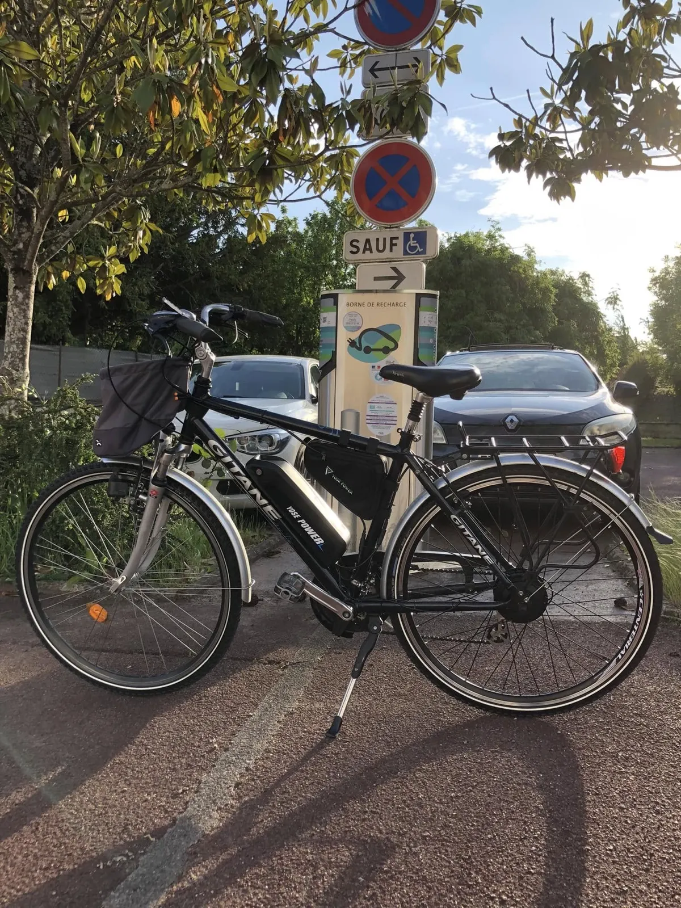
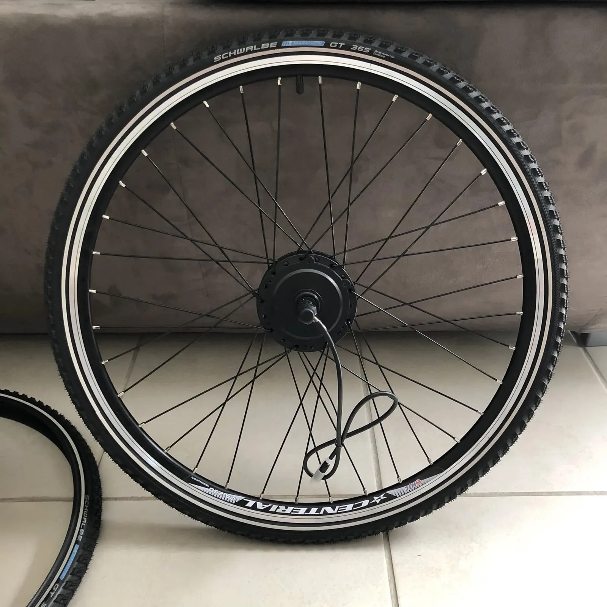
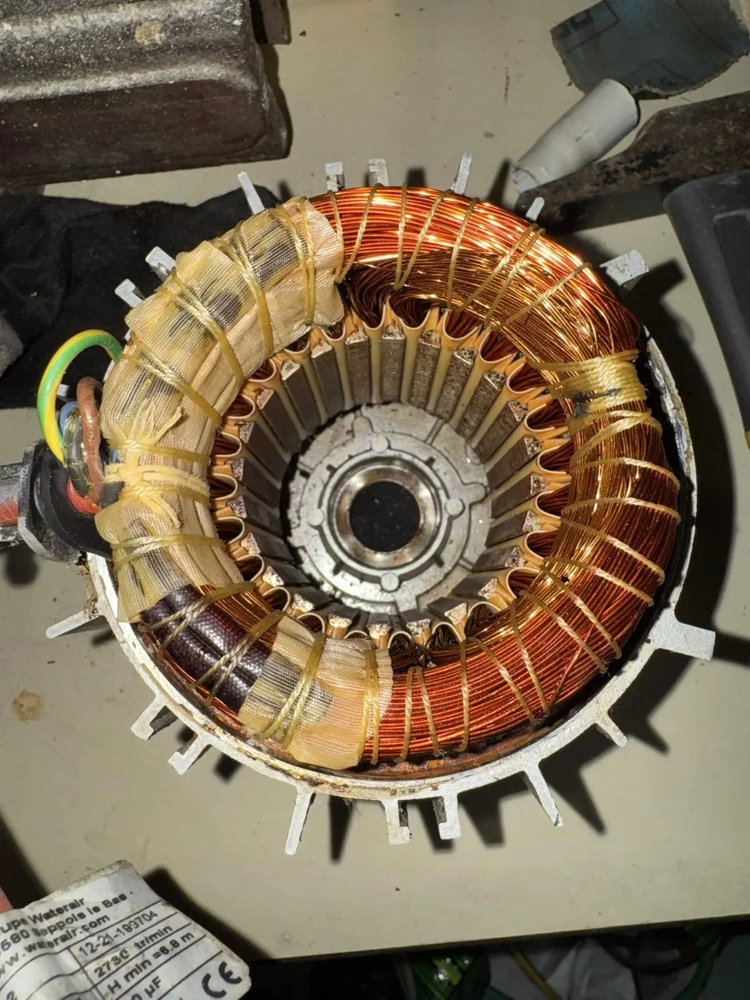
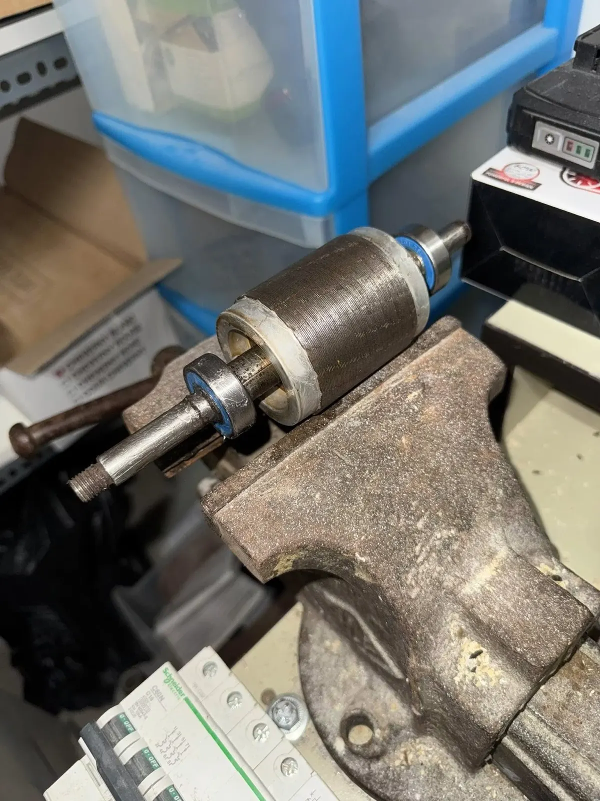
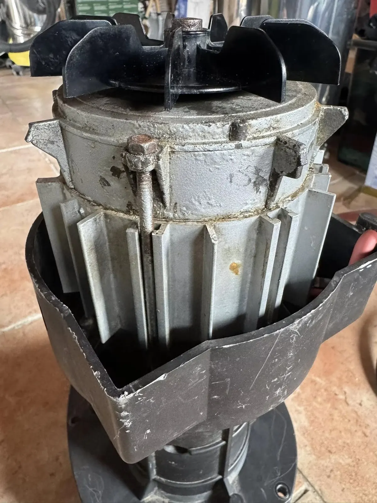
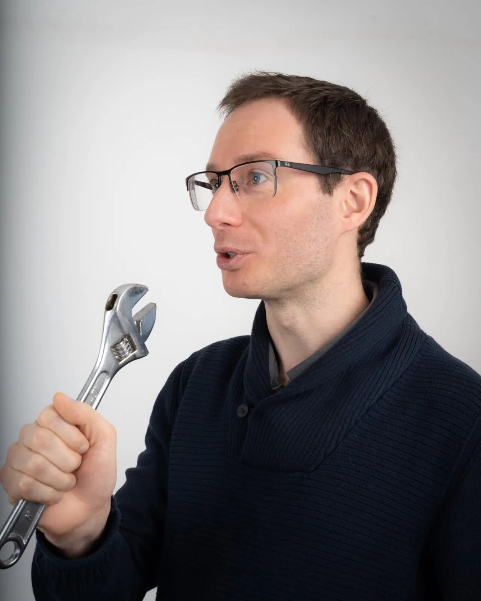
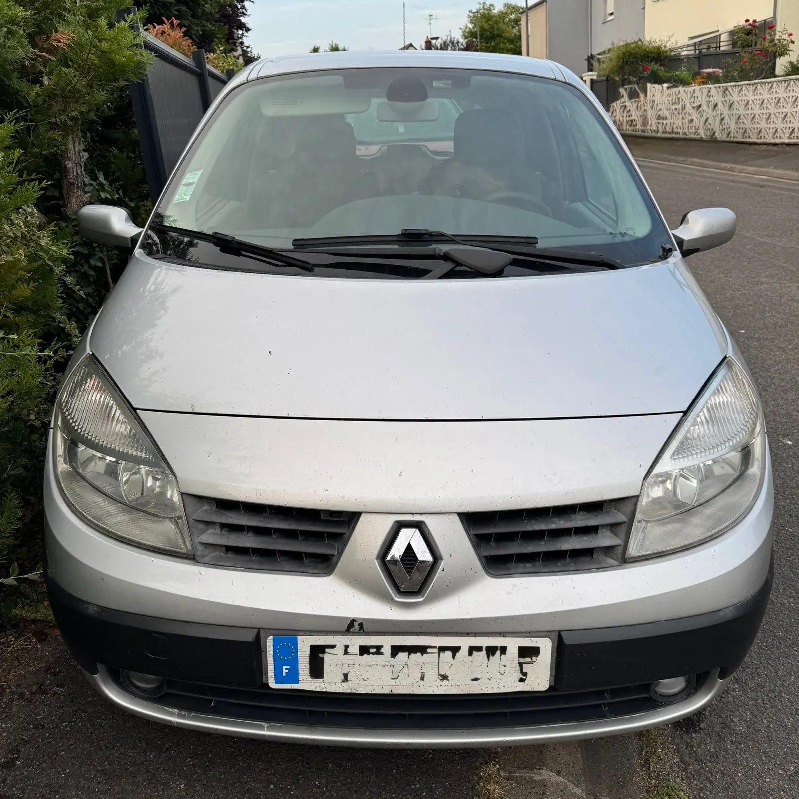

Joué-lès-Tours · Touraine Sud · Vienne
Votre vélo remis au top, à domicile.
Réparations à domicile et dépannages. Révision, réglages, diagnostic et électrification de vélos classiques : Guillaume intervient en Touraine Sud, proche de Tours, et dans la Vienne autour de Châtellerault.
- À domicileréparations et dépannages
- Touraine Sudproche de Tours, et la Vienne autour de Châtellerault
- CFA de La Rochelleformé à la réparation des cycles
- 5,0 sur 510 avis sur Google


La saison vélo démarre, votre vélo aussi.
Les beaux jours arrivent : pensez à remettre votre vélo au top avant de rouler. L'intervention est rapide et professionnelle, chez vous.
Révision
Remettre votre vélo au top avant de rouler.
Réglages
Entretenir et régler vos vélos pour la belle saison qui revient.
Diagnostic
Trouver d'où vient la panne, sur place.
Électrification
Un vélo classique passé à l'électrique : moteur dans la roue avant, la roue arrière ou au pédalier, selon le type de vélo et la sensation de pédalage voulue.
Pompe Waterair P40 : réparée plutôt que remplacée.
Votre pompe P40 est en panne ou fait du bruit ? Inutile de la remplacer à prix élevé. La réparation est simple, rapide et économique.



- Remise en état avec roulements inox et joint neuf
- Graissage anti-corrosion spécial eau et sel
- Pompe testée avant envoi : une solution fiable et durable
- Vous envoyez votre pompe
- Intervention rapide
- Paiement
- Retour prêt à l'emploi
Guillaume Artaud, réparer par passion.
J'adore réparer et me dépanner grâce à mes connaissances acquises ces dernières années, aussi bien au travail que seul à la maison face à des imprévus.
Guillaume, en se présentant
Ancien enseignant de la conduite automobile pendant près de dix ans, Guillaume s'est reconverti et s'est formé à la réparation des cycles au CFA de La Rochelle, fin 2022. Il entretient et répare aujourd'hui vos vélos, chez vous.

Guillaume, clé en main
Et tout le reste du quotidien.
Le « multiservices » du nom : Guillaume vous aide aussi pour tout ce qui est du quotidien.
- Petit bricolage à domicile
- Régler ou réparer divers objets du quotidien.
- Livraisons
- Sur demande, il suffit d'appeler.
- Diagnostic automobile
- Lecture des codes défauts après un voyant allumé, avec une valise : elle oriente sur la panne et vous rassure avant de réparer vous-même ou de passer au garage.

Côté automobilediagnostic à la valise
Un vélo à reprendre ? Appelez Guillaume.
Révision, réglage, électrification ou dépannage : décrivez le souci au téléphone ou par mail, Guillaume vous dit comment il intervient.
- Téléphone
- 06 33 05 18 50
- Adresse
- 29 rue de Chissay
37300 Joué-lès-Tours - Interventions
- Touraine Sud, proche de Tours, et la Vienne autour de Châtellerault